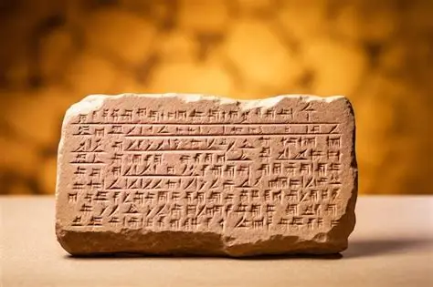
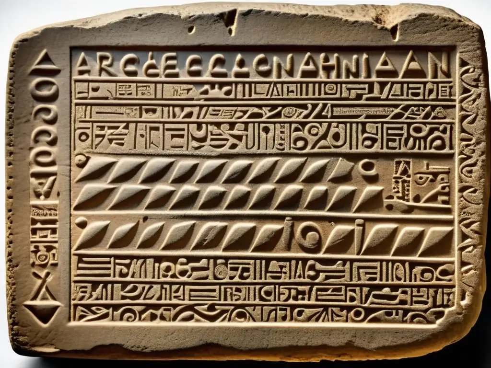
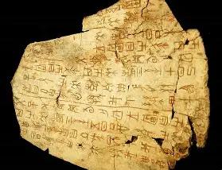
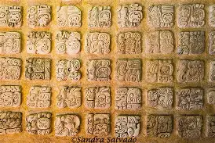

La escritura surgió alrededor del 3500 a. C. en Mesopotamia, cuando los sumerios comenzaron a usar signos grabados en tablillas de arcilla para registrar transacciones y hechos importantes. Este sistema, conocido como escritura cuneiforme, marcó el inicio de la Historia y permitió conservar el conocimiento, las leyes y las tradiciones de las primeras civilizaciones. A partir de entonces, otros pueblos, como los egipcios, los chinos y los mayas, desarrollaron sus propios sistemas de escritura, fundamentales para el progreso cultural y social de la humanidad.



